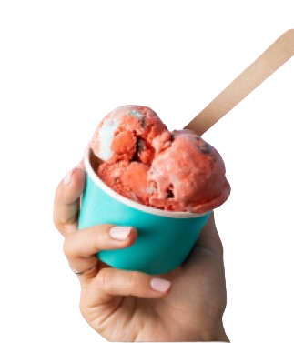
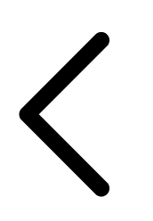
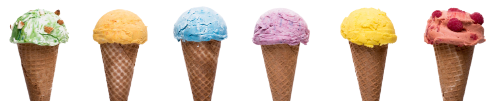

torucream
Helados que derriten tu corazón,
Donde cada sabor es una aventura
Helados que derriten tu corazón,
Donde cada sabor es una aventura
INICIO
MENU
CONTACTOS
SUCURSALES
NOSOTROS

INICIO
FRUTALES
CREMOSOS


FRUTALES
CREMOSOS
PEDIR AHORA